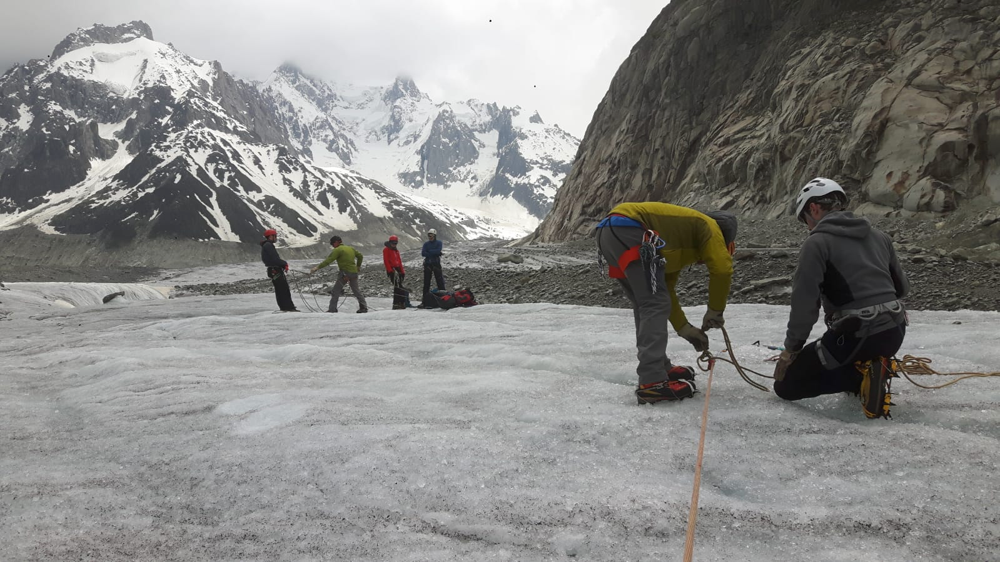
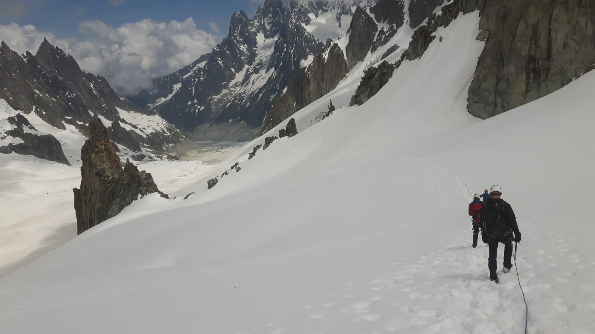

Chamonix and the Conville Course
Writing
I set off to the Alps for the Conville Mountaineering Course, and learned a few new skills to keep myself safe in the Mountains this year.
 *Another group out on Mont Blanc Massif
*Another group out on Mont Blanc Massif
Back to the Friday before, where I’m desperately trying to sort out my equipment before an early-morning flight to Geneva.

Axe, crampons, harness, HELMET.. that seems important. Loads of socks, I’m walking after all. Jaffa cakes are vital.
I’ve been on a crawl around the local mountaineering shops, and already spent a silly amount on extra karabiners and guidebooks. I think that means I’m ready to go.
I must pack everything I need to travel safely on ice and snow this week. I’ve been awarded a subsidised place on the Jonathon Conville Alpine Mountaineering Course to learn how to plan alpine days. I want to know all the essential ropework to travel across glaciers safely, how to rescue someone from a crevasse, and to use axes, crampons as well as different belay systems for navigating treacherous terrain. So there’s a lot of equipment I’d better bring with me if I’m going to be able to try it out.

I’m in Geneva the next day, and after a brief minibus trip, I’m ready to relax in the campsite with a whole baguette and selection of cheese. It’s carb-loading, probably.
We meet with our guides the next morning. They’re all established guides of Plas y Brenin, with a stunning collective history of mountaineering. They’d all be worth an article or two in themselves - they were full of stories of adventures over the years, making great company on the mountain, and they help the Jonathon Conville Memorial Trust achieve its aims to encourage and assist young people to “pursue their love of the outdoors in the spirit of adventure”.

*My view up the slope to one of the other students, rescuing me.
For our first day we headed into Chamonix to catch the Montenvers Train up to the Mer de Glace. This is the largest glacier in France, and one of 7 majors which make up the valley. This was the perfect place then for practicing how to rope up for travel, to rescue someone from a crevasse and to learn how to use crampons and axes together across different terrain.
There were a lot of individual skills being applied here, but the good, clear explanations, together with the repetitive teaching style really drilled the fundamentals again and again throughout the day, and it helped me to learn skills I needed. A lot of what was being applied here is just as useful in Scottish Winter, and many of the places on the course are awarded for just that reason; to help clubs to improve their collective safety back in the UK. This was fantastic day out on the ice.

Day 2 and we headed half-way up the Aiguille du Midi. Unfortunately the second stage of the cable car was under repairs, so we walked out onto the Plan de l’Aiguille and worked on our systems for climbing together and setting up a belay.

We set up snow bollards, ice-axe anchors, and learned how to properly place ice scews for belaying or rescuing. It was great to learn this properly from an experienced guide; having someone there to correct, or help improve your attempts. It was really useful to hear the principles that underlie it, as well as knowing how small differences in the angles or depths could make a huge difference to it failing or not. Throughout the day you could hear the rocks falling off in the distance as the ice warmed up in the sun, and mini-avalanches going off in the background.

Our last day, and we drove through the Mont Blanc Tunnel to Italy. Unfortunately since our way up to the Aguille du Midi was closed, we decided to go a little bit further through to the other side of the mountains, and take the cable car to the Punta Helbronner instead.
Up at height, we were able to put to use all the skills that we’d been learning that week. We split up into pairs to travel across the glacier, then up a ridge to ascend the Aiguille d’Entrèves. After a few photos and snacks, we followed our footsteps back across the glacier, and up the Aiguille de Toula. These were 2 easy routes that helped us to practice our safety systems, climbing together, and just get a feel for how things run on an alpine day.

After regrouping back at the cable station, the end of our course was a long conversation about what came next for us. We talked about gradings, how to plan out a route, as well as a few example days we should be trying out; the next steps for us individually. It was incredibly inspiring to hear this, and really took out a lot of the fear and hesitations about overreaching your own capabilities in mountaineering. Contextualising that difficulty and risk, especially in terms of our own experiences gave us a lot of opportunity to go off and advance our own skills.
Coming away from the course I felt far more capable in myself, and in my capacity to plan out for the next set of adventures. I’d recommend the course to anyone looking to live life more adventurously.

A few tips for next time;
- The ‘Maison de la Montagne’ is a treasure trove of information if you need to look at a guidebook, see a map, or ask any questions when planning a day out.
- You can now get cheap, external batteries powerful enough to charge your phone for a week. Great for travelling.
- The lifts, (and huts), open properly from mid-June. Worth looking up the dates when planning your trip, as not all of them will be open at the start of the season. Many of the routes will require a long walk-in otherwise.
- Camping D’Argentiere is the great place to stay if you’re on the course, or even just climbing in the valley during the Summer. It’s very social, and a great place to find climbing partners.
This course was helped subsidise by my employer, Go Ape. I recieved funding through their staff Adventure Fund.
Prev: ''You alright?''